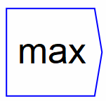

Returns the maximum of and . If multiple wires are connected to the ports, the the overall maximum from all inputs is returned.
The operator can be placed on the canvas in two ways:
 and
and  . If multiple
wires are connected to the ports, the the overall maximum from all
inputs is returned.
. If multiple
wires are connected to the ports, the the overall maximum from all
inputs is returned.